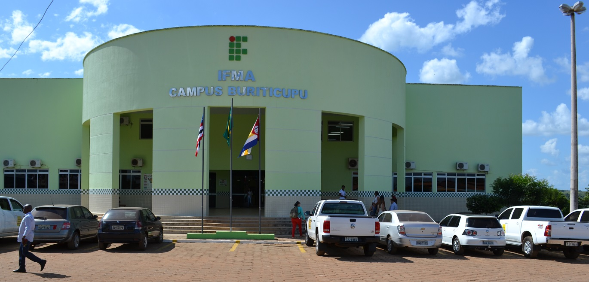

A Corporate Card the Brazilian Government Rarely Uses Has One Loyal Customer
While the Centralized Procurement Payment Card has largely fallen out of favor across the federal government, the Ministry of Education generated more than 70% of its spending and transactions over the past five years.
Over the past five years, the Centralized Procurement Payment Card (CPCC) — one of the three government corporative cards — accounted for less than 1% of all spending made through Brazil's federal government's corporate card system, according to data from the Country’s Transparency Portal.
Yet one ministry continues to use it regularly.
More than 70% of every transaction — and more than 70% of all spending — made with the CPCC since the second half of 2021 came from Brazil's Ministry of Education, making it by far the card's largest user.
Where does the Education Ministry spends with CPCC
Within the Ministry of Education, only five federal higher education institutions used the CPCC during the past five years.
More than half of all the ministry's CPCC transactions came from a single campus: the Federal Institute of Maranhão (IFMA), in Buriticupu, a technical and higher education institution in the northeastern state of Maranhão.

IFMA's Buriticupu entrance. Sorce:IFMA
The IFMA's Buriticupu campus was also responsible for some of the largest individual payments made with the card during the period.
Cláudia Maria Bezerra Lima, the only individual among the top five recipients, received two of those payments, both issued on the same day, Sept. 4, 2025. According to Brazil's Transparency Portal, both were for airline tickets, totaling roughly R$5,500 combined.
According to Brazil's Transparency Portal, both payments were made to cover airline tickets, totaling roughly R$5,500.
Lima holds a degree in pedagogy, with a specialization in psychopedagogy and a master's in professional and technological education, according to her academic profile on Google Scholar.
An Almost Forgotten Card
The CPCC was originally designed for centralized government purchases and occasional expenses, including airline tickets - such as the ones receved by Lima
In recent years, though, it has become the least-used of Brazil's three federal payment cards.
The most common is the Federal Government Payment Card (CPGF), which covers low-value government purchases that do not require a formal bidding process, such as office supplies, meals and other routine expenses.
A third card, the Civil Defense Payment Card (CPDC), is reserved for emergency spending, including disaster response, and its use has increased in recent years which could be related to climate-related emergencies.
Brazil publishes monthly records of all transactions made with its corporate government cards through the Transparency Portal, maintained by the Office of the Comptroller General (CGU). Federal agencies use the cards to pay for specific public expenses without relying on traditional reimbursement processes.